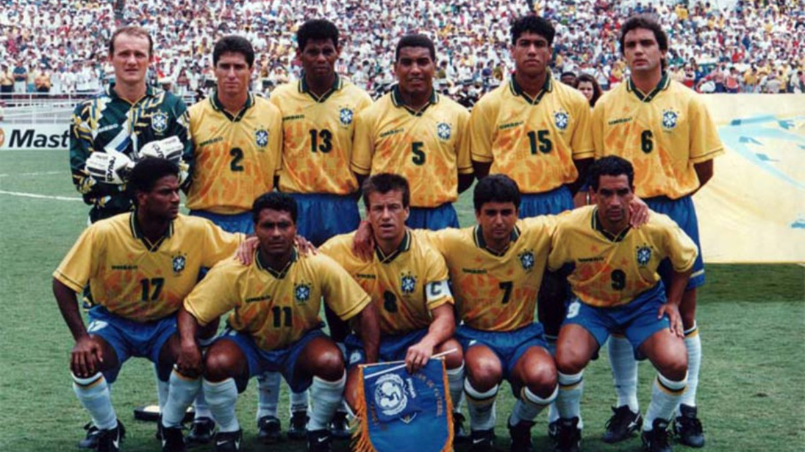
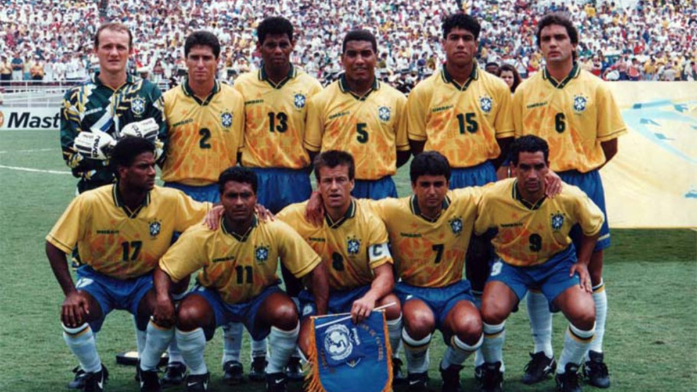
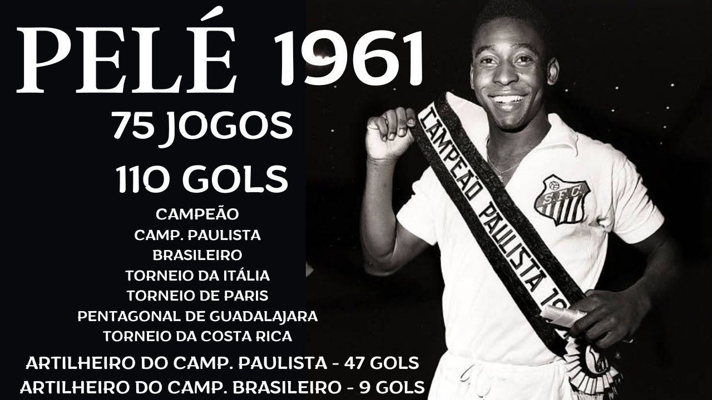
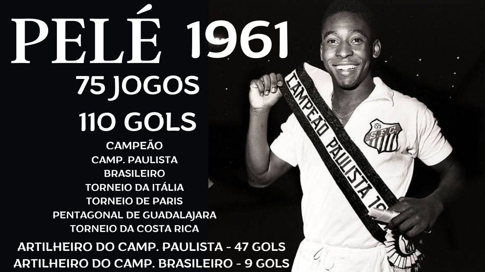

Fotos Icônicas
 

 

Perfil dos Jogadores

Pelé
Considerado o maior jogador de futebol de todos os tempos, Pelé conquistou três Copas do Mundo.
Zico
Conhecido como o "Galinho de Quintino", Zico brilhou nas décadas de 70 e 80, sendo um habilidoso meia atacante.

Ronaldinho Gaúcho
Craque conhecido pelo talento e alegria em campo, conquistou a Copa do Mundo em 2002.
Gols em Finais da Copa do Mundo
- 1958 - Pelé: Marcou o gol da vitória contra a Suécia, com apenas 17 anos.
- 1970 - Jairzinho: Marcou em todas as partidas, incluindo a final contra a Itália.
- 1994 - Romário: Fundamental para o título, marcou gols decisivos durante o torneio.
- 2002 - Ronaldo Fenômeno: Marcou dois gols na final contra a Alemanha.
História da Seleção Brasileira
A Seleção Brasileira de Futebol, conhecida como "Seleção Canarinho", é uma das mais vitoriosas do mundo. Com cinco títulos da Copa do Mundo FIFA (1958, 1962, 1970, 1994 e 2002), é a única equipe a ter participado de todas as edições do torneio desde sua criação em 1930.
O Brasil é famoso por seu estilo de jogo alegre e criativo, sendo o berço de lendas como Pelé, Zico, Romário e Ronaldo Fenômeno. A seleção também é conhecida por sua camisa amarela, que se tornou um símbolo do futebol brasileiro.
Os Técnicos

Aymoré Moreira
Técnico da seleção campeã em 1958 e 1962.
Cláudio Coutinho
Treinador da seleção em 1978, trouxe inovação tática para o futebol brasileiro.
Luiz Felipe Scolari
Técnico do penta em 2002 e um dos mais icônicos da história brasileira.